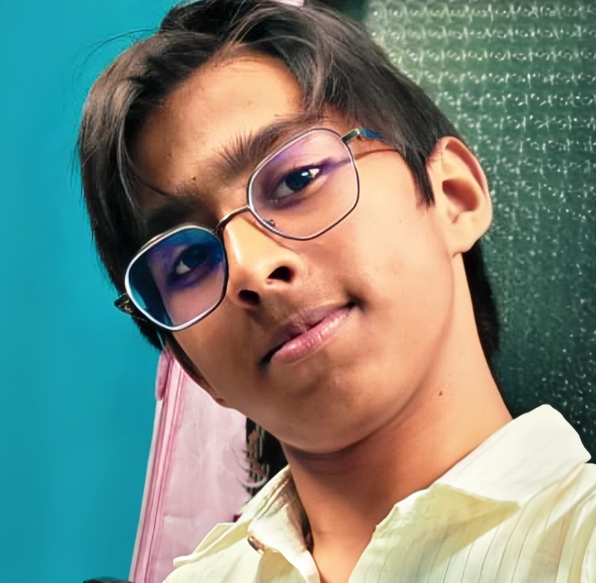

Building foundations in science, systems, and long-term thinking.
I am a 14-year-old student focused on developing strong academic foundations in science and analytical reasoning. My long-term direction lies in advanced technological and biological systems, with interests spanning robotics, artificial intelligence, and biotechnology.